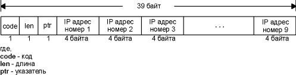
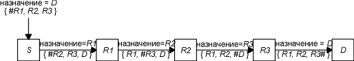

Программа Traceroute, написанная Van Jacobson, - отладочное средство, которое позволяет лучше понять устройство протоколов TCP/IP. Обычно две последовательные датаграммы отправленные от одного и того же источника к одному и тому же пункту назначения проходят по одному и тому же маршруту, однако гарантировать этого невозможно. Traceroute позволяет нам посмотреть маршрут, по которому двигаются IP датаграммы от одного хоста к другому. С помощью Traceroute можно воспользоваться IP опцией маршрутизации от источника.
В страницах помощи о программе Traceroute говорится: "Разработана Van Jacobson по предложению Steve Deering. Отлажена и настроена C. Philip Wood, Tim Seaver и Ken Adelman."
Функционирование программы Traceroute
В разделе "Опция записи IP маршрута" главы 7 мы описали IP опцию записи маршрута (RR). Возникает вопрос, зачем писать новое приложение, когда данная опция уже реализована? Существует три причины. Во-первых, исторически не все маршрутизаторы поддерживают опцию записи маршрута, из чего следует, что некоторые маршруты становятся неиспользуемыми. (Traceroute не требует каких-либо специальных характеристик на промежуточных маршрутизаторах.)
Во-вторых, запись маршрута обычно осуществляется в одном направлении. Отправитель включает опцию, а получатель должен вставить все значения из принятого IP заголовка и каким-либо образом вернуть их отправителю. В разделе "Опция записи IP маршрута" главы 7 мы видели, что большинство реализаций сервера Ping (функция ICMP эхо отклика, встроенная в ядро) отображают входящий RR список, однако при этом удваивается количество записанных IP адресов (путь туда и обратно), помимо этого существует еще несколько ограничений, которые будут рассмотрены в следующем параграфе. (Traceroute требует только того, чтобы на пункте назначения присутствовал работающий UDP модуль - никаких специальных серверных приложений не требуется.)
Третья и основная причина заключается в том, что размер, предоставляемый для опций в IP заголовке, недостаточен для того, чтобы обработать большинство маршрутов. В поле опций IP заголовка входит всего 9 IP адресов. Если во времена ARPANET этого хватало, на сегодняшний день этого слишком мало.
Traceroute использует ICMP и поле TTL в IP заголовке. Поле TTL (время жизни) это 8-битное поле, которое отправитель устанавливает в какое-либо значение. Рекомендуемое исходное значение указано в Assigned Numbers RFC и в настоящее время равно 64. Более старые системы устанавливают это значение в 15 или 32. Мы видели в некоторых примерах работы программы Ping (глава 7), что ICMP эхо отклики часто отправляются с TTL, установленным в максимальное значение - 255.
Каждый маршрутизатор, который обрабатывает датаграмму, уменьшает значение TTL на единицу или на количество секунд, в течение которых маршрутизатор обрабатывал датаграмму. Так как большинство маршрутизаторов задерживает датаграмму меньше чем секунду, поле TTL, как правило, уменьшается на единицу и довольно точно соответствует количеству пересылок.
RFC 1009 [Braden and Postel 1987] требует, чтобы маршрутизатор, задерживающий датаграмму на время большее чем 1 секунда, уменьшал TTL на количество секунд. Совсем немногие маршрутизаторы удовлетворяют этому требованию. Современные требования к маршрутизаторам, Router Requirements RFC [Almquist 1993], делают это требование необязательным, позволяя маршрутизаторам использовать поле TTL в качестве счетчика пересылок.
С помощью поля TTL предотвращается зацикливание датаграммы в петлях маршрутизации. Например, если маршрутизатор вышел из строя или соединение между двумя маршрутизаторами потеряно, может потребоваться некоторое время (от нескольких секунд до нескольких минут), для того чтобы определить, что маршрут потерян и что его необходимо обойти. В это время существует вероятность, что датаграмма будет уничтожена в петле маршрутизации. Чтобы предотвратить потерю датаграммы, поле TTL устанавливается в максимальную величину.
Когда маршрутизатор получает IP датаграмму с TTL равным либо 0, либо 1, он не должен отправлять эту датаграмму дальше. (Хост приемник должен доставить подобную датаграмму в приложение, так как датаграмма не может быть смаршрутизировна. Как правило, системы не должны получать датаграммы с TTL равным 0.) Если такую датаграмму получает маршрутизатор, он уничтожает ее и посылает хосту, который ее отправил ICMP сообщение "время истекло" (time exceeded). Принцип работы Traceroute заключается в том, что IP датаграмма, содержащая это ICMP сообщение, имеет в качестве адреса источника IP адрес маршрутизатора.
Теперь мы можем понять, как работает Traceroute. На хост назначения отправляется IP датаграмма с TTL, установленным в единицу. Первый маршрутизатор, который должен обработать датаграмму, уничтожает ее (так как TTL равно 1) и отправляет ICMP сообщение об истечении времени (time exceeded). Таким образом, определяется первый маршрутизатор в маршруте. Затем Traceroute отправляет датаграмму с TTL равным 2, что позволяет получить IP адрес второго маршрутизатора. Это продолжается до тех пор, пока датаграмма не достигнет хоста назначения. Однако, если датаграмма прибыла именно на хост назначения, он не уничтожит ее и не сгенерирует ICMP сообщение об истечении времени, так как датаграмма достигла своего конечного назначения. Как можно определить, что датаграмма достигла конечного пункта назначения?
В UDP датаграммах, которые посылает Traceroute, устанавливается несуществующий номер UDP порта (больше чем 30000), что делает невозможным обработку этой датаграммы каким-либо приложением. Поэтому когда прибывает подобная датаграмма, UDP модуль хоста назначения генерирует ICMP сообщение "порт недоступен" (port unreachable) (см. раздел "ICMP ошибка недоступности порта" главы 6). Все что необходимо в этом случае, Traceroute это определить тип принятого ICMP сообщения - либо об истечении времени, либо о недоступности порта - именно таким образом мы узнаем, доставлена ли датаграмма в пункт назначения.
Программа Traceroute должна уметь устанавливать поле TTL в исходящих датаграммах. Не все интерфейсы TCP/IP поддерживают это, и не все реализации предоставляют эту возможность, однако большинство современных систем предоставляют. А это означает, что Traceroute может быть запущена. Однако обычно требуется, чтобы эту программу запускал суперпользователь.
Работа в локальной сети
А сейчас запустим traceroute. Мы будем использовать сети, показанные на рисунке, приведенном на внутренней стороне обложки, и пройдем по маршруту от svr4 к slip через маршрутизатор bsdi. Выделенный SLIP канал между bsdi и slip имеет скорость 9000 бит/сек.
svr4 % traceroute slip
traceroute to slip (140.252.13.65), 30 hops max, 40 byte packets
1 bsdi (140.252.13.35) 20 ms 10 ms 10 ms
2 slip (140.252.13.65) 120 ms 120 ms 120 ms
Первая строка, без номера содержит имя и IP адрес пункта назначения и указывает на то, что величина TTL не может быть больше 30. Размер датаграммы установлен в 40 байт, из которых 20 байт отводится на IP заголовок, 8 байт на UDP заголовок и 12 байт на пользовательские данные. (В 12 байтах пользовательских данных содержится номер последовательности, который увеличивается на единицу при отправке каждой следующей датаграммы, копия исходящего TTL и время, когда датаграмма была отправлена.)
Следующие две строки вывода начинаются с TTL, после чего следует имя хоста или маршрутизатора и их IP адреса. Для каждого значения TTL отправляется 3 датаграммы. Для каждого возвращенного ICMP сообщения рассчитывается и печатается время возврата (round-trip). Если ответ не получен в течении пяти секунд на любую из трех датаграмм, печатается звездочка, после чего отправляется следующая датаграмма. В нашем примере первые три датаграммы имели TTL, установленный в единицу, а ICMP сообщения вернулись через 20, 10 и 10 миллисекунд. Следующие три датаграммы были отправлены с TTL равным 2, а ICMP сообщения вернулись с задержкой 120 миллисекунд. Так как TTL со значением 2 достигло конечного пункта назначения, программа прекратила свою работу.
Времена возврата (round-trip) рассчитывается программой traceroute на хосте отправителе. Они представляют из себя полные времена возврата от программы traceroute к маршрутизатору. Если необходимо расчитать время, затраченное на каждую пересылку, мы должны вычесть значение, полученное как TTL N, из значения, полученного как TTL N+1.
На рисунке 8.1 показан вывод tcpdump для данного исполнения программы traceroute. То что первый пробный пакет к bsdi имел RTT равное 20 миллисекундам, а следующие два имели RTT равное 10 миллисекундам объясняется тем, что был осуществлен ARP обмен.
Значение, которое выбирается как номер UDP порта назначения, начинается с величины 33435 и увеличивается на единицу каждый раз, когда отправляется следующая датаграмма. Номер порта может быть изменен с использованием опции командной строки. UDP датаграмма содержит 12 байт пользовательских данных, как упоминалось ранее, в том случае, если в выводе traceroute мы видим, что отправляются датаграммы размером в 40 байт.
Когда IP датаграмма имеет TTL равное единице, tcpdump печатает комментарий [ttl 1]. Подобное сообщение печатается, когда TTL равно 0 или 1, чтобы предупредить нас о том, что в датаграмме что-то не в порядке. В данном случае мы ожидаем увидеть TTL равное 1, однако некоторые другие приложения получат предупреждение о том, что датаграмма скорее всего не достигла своего конечного пункта назначения. Скорее всего мы никогда не увидим датаграммы с TTL равным 0, если только маршрутизатор, который отправил ее в кабель, не вышел из строя.
1 0.0
arp
who-has bsdi tell svr4
2 0.000586 (0.0006) arp reply bsdi is-at 0:0:c0:6f:2d:40
3 0.003067 (0.0025) svr4.42804>slip.33435: udp 12 [ttl 1]
4 0.004325 (0.0013) bsdi>svr4: icmp: time exceeded in-transit
5 0.069810 (0.0655) svr4.42804>slip.33436: udp 12 [ttl 1]
6 0.071149 (0.0013) bsdi>svr4: icmp: time exceeded in-transit
7 0.085162 (0.0140) svr4.42804>slip.33437: udp 12 [ttl 1]
8 0.086375 (0.0012) bsdi>svr4: icmp: time exceeded in-transit
9 0.118608 (0.0322) svr4.42804>slip.33438: udp 12
10 0.226464 (0.1079) slip>svr4: icmp: slip udp port 33438
unreachable
11 0.287296 (0.0608) svr4.42804>slip.33439: udp 12
12 0.395230 (0.1079) slip>svr4: icmp: slip udp port 33439
unreachable
13 0.409504 (0.0143) svr4.42804>slip.33440: udp 12
14 0.517430 (0.1079) slip>svr4: icmp: slip udp port 33440
unreachable
Рисунок 8.1 Вывод tcpdump для примера traceroute от svr4 к slip.
ICMP cообщение "время истекло при передаче" (time exceeded in transit) это то, что мы ожидаем увидеть от маршрутизатора bsdi, в том случае если он уменьшит на единицу TTL и оно станет равным нулю. ICMP сообщение придет от маршрутизатора даже в том случае, если IP датаграмма, которая была уничтожена, направлялась на slip.
Существуют два различных ICMP сообщения об истечении времени (рисунок 6.3), в каждом из них содержится различное поле code. На рисунке 8.2 показан формат этих ICMP сообщений.

Рисунок 8.2 ICMP сообщение об истечении времени ("time exceeded").
В сообщении, которое генерируется, когда TTL достигает нуля, поле code равно нулю.
Существует возможность, что хост пошлет ICMP сообщение "время истекло в течении повторной сборки" (time exceeded during reassembly) в том случае, если время истекло в течении повторной сборки фрагментированной датаграммы. (Мы подробно рассмотрим фрагментацию и повторную сборку в разделе "Фрагментация IP" главы 11.) В этом случае поле code устанавливается в единицу.
Строки с 9-ой по 14-ую на рисунке 8.1 соответствуют трем датаграммам, которые посылаются с TTL равным 2. Они достигают конечного пункта назначения, при этом генерируется ICMP сообщение о недоступности порта.
Попробуем рассчитать время возврата, которое соответствует SLIP каналу, как это было сделано в разделе "Программа Ping" главы 7, когда при работе программы Ping была установлена скорость канала - 1200 бит/сек. Исходящая UDP датаграмма содержит 12 байт данных, 8 байт UDP заголовка, 20 байт IP заголовка и 2 байта (минимум) для создания SLIP фреймов (см. раздел "SLIP: IP по последовательной линии" главы 2), что в целом составляет 42 байта. В отличие от Ping, размер возвращающихся датаграмм изменяется. На рисунке 6.9, мы видели, что возвращаемое ICMP сообщение содержит IP заголовок датаграммы, которая вызвала ошибку и первые 8 байт данных, которые следуют за IP заголовком (содержащие UDP заголовок, в данном случае traceroute). При этом мы получаем 20+8+20+8+2 или 58 байт. При скорости передачи в 960 байт/сек, ожидаемое RTT составляет (42+58/960) или 104 миллисекунды. Это сопоставимо со значением, рассчитанным для svr4 и равным 110 миллисекундам.
Номер порта источника на рисунке 8.1 достаточно большой (42804). traceroute устанавливает номер порта источника IP датаграмм, которые она посылает в логическое ИЛИ (logical OR), со своим идентификатором процесса (32768). В этом случае, если traceroute запущена несколько раз на одном и том же хосте, каждый процесс просматривает номер порта источника в UDP заголовке, который возвращается в ICMP сообщении, и обрабатывает только те сообщения, которые были отправлены в качестве отклика на его запрос.
Необходимо отметить некоторые особенности traceroute. Во-первых, не существует гарантии, что маршрут, который используется сегодня, будет использоваться и завтра, даже если две последовательные датаграммы были отправлены к одному и тому же пункту назначения. Если маршрут изменится в процессе работы программы, Вы увидите это, потому что traceroute напечатает новые IP адреса для определенных TTL.
Во-вторых, не существует гарантии того, что путь, по которому вернется ICMP сообщение, совпадет с путем, по которому traceroute отправила UDP датаграмму. Это означает, что время возврата, которое печатает программа, может не совпадать со временем, потребовавшимся на передачу исходящей датаграммы и возвращенного сообщения. (Возможен вариант, что UDP датаграмма дойдет от источника до маршрутизатора за 1 секунду, однако ICMP сообщение проделает обратный путь за 3 секунды, при этом время возврата будет напечатано как 4 секунды.)
В-третьих, IP адрес, который возвращается в сообщение ICMP, это IP адрес интерфейса, на который маршрутизатор принял UDP датаграмму. Тогда как при использовании опции записи маршрута (см. раздел "Опция записи IP маршрута" главы 7) записывается IP адрес исходящего интерфейса. Так как каждый маршрутизатор по умолчанию имеет 2 или более интерфейсов, запуск traceroute от хоста А к хосту В может отличаться от того, который запущен с хоста В на хост А. Действительно, если мы запустим traceroute от хоста slip к svr4, вывод будет следующим:
slip % traceroute svr4
traceroute to svr4 (140.252.13.34), 30 hops max, 40 byte packets
1 bsdi (140.252.13.66) 110 ms 110 ms 110 ms
2 slip (140.252.13.34) 110 ms 120 ms 110 ms
В этом случае IP адрес, напечатанный для хоста bsdi, это адрес SLIP интерфейса (140.252.13.66), тогда как до этого адрес был 140.252.13.35, что соответствовало интерфейсу Ethernet. Так как traceroute пытается определить имя, связанное с IP адресом, имена будут различны. (В нашем примере оба интерфейса bsdi имеют одно и то же имя.)
Обратимся к рисунку 8.3. На нем показаны две локальные сети, соединенные через маршрутизаторы. Два маршрутизатора соединены по каналу точка-точка. Если мы запустим traceroute с хоста в левой локальной сети на хост в правой локальной сети, IP адреса для маршрутизатора будут if1 и if3. При использовании другого пути, будут получены адреса if4 и if2. Два интерфейса if2 и if3 имеют один и тот же идентификатор сети, тогда как два других интерфейса имеют разные идентификаторы сетей.

Рисунок 8.3 Идентификация интерфейсов программой traceroute.
И в заключение отметим, что при работе с глобальными сетями вывод traceroute значительно легче читать, если вместо IP адресов печатаются читаемые имена доменов. Однако, так как в ICMP сообщении, принимаемом при работе traceroute, содержится IP адрес, он и будет выдан, если преобразовать IP адрес в имя домена не удалось. В этом случае администратор должен позаботиться о том, чтобы принятый IP адрес мог быть корректно трансформирован в имя домена. Мы опишем, как IP адреса конвертируются в имена с использованием DNS, в разделе "Запросы указателя" главы 14.
Вывод при работе в глобальных сетях
Вывод, показанный ранее для нашей маленькой сети, достаточно реально показывает, как функционируют протоколы. Однако, будет очень интересно посмотреть, как работает traceroute в больших сетях, например, в сети Internet.
На рисунке 8.4 показано как отправляется запрос от sun к Сетевому информационному центру (NIC - Network Information Center).
sun % traceroute nic.ddn.mil
traceroute to nic.ddn.mil (192.112.36.5), 30 hops max, 40 byte packets
1 netb.tuc.noao.edu (140.252.1.183) 218 ms 227 ms 233 ms
2 gateway.tuc.noao.edu (140.252.1.4) 233 ms 229 ms 204 ms
3 butch.telcom.arizona.edu (140.252.104.2) 204 ms 228 ms 234 ms
4 Gabby.Telcom.Arizona.EDU (128.196.128.1) 234 ms 228 ms 204 ms
5 NSIgate.Telcom.Arizona.EDU (192.80.43.3) 233 ms 228 ms 234 ms
6 JPL1.NSN.NASA.GOV (128.161.88.2) 234 ms 590 ms 262 ms
7 JPL3.NSN.NASA.GOV (192.100.15.3) 238 ms 223 ms 234 ms
8 GSFC3.NSN.NASA.GOV (128.161.3.33) 293 ms 318 ms 324 ms
9 GSFC8.NSN.NASA.GOV (192.100.13.8) 294 ms 318 ms 294 ms
10 SURA2.NSN.NASA.GOV (128.161.166.2) 323 ms 319 ms 294 ms
11 nsn-FIX-pe.sura.net (192.80.214.253) 294 ms 318 ms 294 ms
12 GSI.NSN.NASA.GOV (128.161.252.2) 293 ms 318 ms 324 ms
13 NIC.DDN.MIL (192.112.36.5) 324 ms 321 ms 324 ms
Рисунок 8.4 traceroute от sun к nic.ddn.mil.
Чтобы включить этот пример в текст, мы запустили его для не-DDN узлов (не военные узлы) от nic.ddn.mil к rs.internic.net, новый "InterNIC".
Когда датаграмма выходит из сети tuc.noao.edu, она попадает в сеть telcom.arizona.edu. Затем она попадает в сеть Национального агентства по аэронавтике США (NASA Science Internet), nsn.nasa.gov. Маршрутизаторы с TTL равным 6 и 7 находятся в лаборатории Jet Propulsion (JPL). Сеть sura.net (в выводе TTL равно 11) это сеть Исследовательской ассоциации университетов (Southeastern Universities Research Association Network). GSI (TTL равно 12) это Government Systems, Inc., оператор для NIC.
Второе RTT для TTL равного 6 (590) почти в два раза больше, чем два другие RTT (234 и 262). Это показывает динамику IP маршрутизации. Подобное может произойти где-нибудь по пути от источника к маршрутизатору если какой-нибудь промежуточный маршрутизатор задержал датаграмму. Однако мы не можем сказать, была ли задержена исходящая датаграмма или возвращающееся ICMP сообщение.
RTT для первой попытки с TTL равным 3 (204) меньше, чем RTT для первой попытки с TTL равной 2 (233). Так как каждое полученное RTT является полным временем прохода от посылающего хоста к маршрутизатору, это вполне объснимо.
В примере на рисунке 8.5 показана работа программы Traceroute от хоста sun на хост нашего издателя.
sun % traceroute aw.com
traceroute to aw.com (192.207.117.2), 30 hops max, 40 byte packets
1 netb.tuc.noao.edu (140.252.1.183) 227 ms 227 ms 234 ms
2 gateway.tuc.noao.edu (140.252.1.4) 233 ms 229 ms 234 ms
3 butch.telcom.arizona.edu (140.252.104.2) 233 ms 229 ms 234 ms
4 Gabby.Telcom.Arizona.EDU (128.196.128.1) 264 ms 228 ms 234 ms
5 Westgate.Telcom.Arizona.EDU (192.80.43.2) 234 ms 228 ms 234 ms
6 uu-ua.AZ.westnet.net (192.31.39.233) 263 ms 258 ms 264 ms
7 enss142.UT.westnet.net (192.31.39.21) 263 ms 258 ms 264 ms
8 t3-2.Denver-cnss97.t3.ans.net (140.222.97.3) 293 ms 288 ms 275 ms
9 t3-3.Denver-cnss96.t3.ans.net (140.222.96.4) 283 ms 263 ms 261 ms
10 t3-1.St-Louis-cnss80.t3.ans.net (140.222.80.2) 282 ms 288 ms 294 ms
11 t3-1.Chicago-cnss24.t3.ans.net (140.222.24.2) 293 ms 288 ms 294 ms
12 t3-2.Cleveland-cnss40.t3.ans.net (140.222.40.3) 294 ms 288 ms 294 ms
13 t3-1.New-York-cnss32.t3.ans.net (140.222.32.2) 323 ms 318 ms 324 ms
14 t3-1.Washington-DC-cnss56.t3.ans.net (140.222.56.2) 323 ms 318 ms 324
ms
15 t3-0.Washington-DC-cnss58.t3.ans.net (140.222.58.1) 324 ms 318 ms 324
ms
16 t3-0.enss136.t3.ans.net (140.222.136.1) 323 ms 318 ms 324 ms
17 Washington.DC.ALTER.NET (192.41.177.248) 323 ms 377 ms 324 ms
18 Boston.MA.ALTER.NET (137.39.12.2) 324 ms 347 ms 324 ms
19 AW-gw.ALTER.NET (137.39.62.2) 353 ms 378 ms 354 ms
20 aw.com (192.207.117.2) 354 ms 349 ms 354 ms
Рисунок 8.5 traceroute от хоста sun.tuc.noao.edu к хосту aw.com.
После того как датаграмма вышла из сети telcom.arizona.edu она попадает в региональную сеть western.net (TTL 6 и 7). Затем датаграмма попадает на магистраль (backbone) NSFNET, t3.ans.net, которая используется Advanced Network & Services. (T3 это общепринятая аббревиатура для каналов 45 Мбит/сек, которые используются в качестве магистралей.) И последняя сеть это alter.net, точка подсоединения к Internet для aw.com.
Опция IP маршрутизации от источника
Обычно IP маршрутизация осуществляется динамически, т.е. каждый маршрутизатор принимает решение о том, на какой маршрутизатор следующей пересылки необходимо отправить датаграмму. Приложения не могут управлять этим процессом и обычно этим и не занимаются. Поэтому приходится использовать средства, такие как Traceroute, чтобы проследить, как в действительности происходит маршрутизация.
Идея, заложенная в маршрутизации от источника, заключается в том, что отправитель сам указывает маршрут по которому пройдет датаграмма. Существует две формы:
- Жесткая (strict) маршрутизация от источника. Отправитель указывает точный путь, по которому должна пройти IP датаграмма. Если маршрутизатор обнаруживает, что следующая пересылка, указанная в маршрутизации от источника, не является непосредственно подключенной сетью, возвращается ICMP ошибка "маршрутизация от источника невозможна" (source route failed).
- Свободная (loose) маршрутизация от источника. Отправитель указывает список IP адресов, через который должна пройти IP датаграмма, однако датаграмма может также пройти через другие маршрутизаторы между любыми двумя адресами, указанными в списке.
Traceroute позволяет использовать маршрутизацию от источника.
Некоторые свободно распространяемые исходные тексты программы Traceroute содержат дополнения, которые позволяют установить свободную маршрутизацию от источника. Однако стандартные версии обычно не включают эту опцию. Комментарии к дополнениям гласят: "исходные тексты программы Traceroute, написанные Van Jacobson (весна 1988 года), поддерживали эту характеристику, однако она была удалена по требованию людей, которые вывели из строя свои шлюзы". Для того чтобы показать пример, приведенный в этом разделе, автор установил эти дополнения и модифицировал их таким образом, чтобы можно было использовать оба типа маршрутизации от источника.
На рисунке 8.6 показан формат опции маршрутизации от источника.

Рисунок 8.6 Общий формат опции маршрутизации от источника в IP заголовке.
Формат практически идентичен формату опции записи маршрута, которую мы рассмотрели на рисунке 7.3. Однако, в случае маршрутизации от источника мы должны заполнить список IP адресов, перед тем как будет отправлена IP датаграмма, тогда как в опции записи маршрута мы выделяли пространство и устанавливали в 0 список IP адресов, позволяя маршрутизаторам заполнить их в процессе передачи датаграммы. В случае с маршрутизацией от источника мы выделяем область для заполнения и инициализируем определенное количество требуемых IP адресов, обычно их количество меньше чем 9. В случае опции записи маршрута мы старались выделить как можно больше места, для того чтобы использовать более чем 9 адресов.
Поле code устанавливается в 0x83 для свободной маршрутизации от источника, и в 0x89 для жесткой маршрутизации от источника. Поля len и ptr идентичны тем, что мы описали в разделе "Опция записи IP маршрута" главы 7.
Опции маршрутизации от источника обычно называются "маршрутизацией от источника с записью" (source and record route) (LSRR - свободная и SSRR - жесткая), так как список IP адресов обновляется в процессе того, как датаграмма проходит по маршруту. Происходит следующее:
- Отправляющий хост берет из приложения маршрут от источника, удаляет первый пункт (он становится адресом назначения для датаграммы), перемещает все оставшиеся пункты влево на один пункт (где лево - показано на рисунке 8.6) и помещает исходный адрес назначения на место последнего пункта в списке. Указатель все еще указывает на первый пункт списка (значение указателя равно 4).
- Каждый маршрутизатор, который обрабатывает датаграмму, проверяет, является ли этот адрес адресом назначения. Если нет, датаграмма обрабатывается как обычная. В этом случае должна быть использована свободная маршрутизация от источника, иначе мы не получим датаграмму.
- Если маршрутизатор является пунктом назначения и указатель не больше чем длина, в этом случае (1) следующий адрес в списке (куда указывает ptr) становится адресом назначения датаграммы, (2) IP адрес, соответствующий исходящему интерфейсу, замещает собой только что использованный адрес источника, и (3) указатель увеличивается на 4.
Все это лучше показать на примере. На рисунке 8.7 мы предположили, что посылающее приложение на хосте S отправляет датаграмму к D, указав маршрут от источника как R1, R2 и R3.

Рисунок 8.7 Пример IP маршрутизации от источника.
На этом рисунке символ (#) означает поле указателя, которое может принимать значение 4, 8, 12 и 16. Поле длины всегда будет 15 (3 IP адреса + 3 байта). Обратите внимание на то, как меняется IP адрес назначения в IP датаграмме при каждой пересылке.
Когда приложение получает данные, которые маршрутизировались от источника, оно должно выделить значение принятого маршрута и использовать обратный маршрут для отправки отклика.
Требования к хостам Host Requirements RFC указывает, что TCP клиент должен иметь возможность указать маршрутизацию от источника, и что TCP сервер должен иметь возможность принять маршрутизацию от источника, а также использовать обратный маршрут для всех сегментов TCP соединения. Если TCP сервер позже принял другой маршрут от источника, более новый маршрут перезаписывает собой ранний маршрут.
Примеры traceroute с использованием свободной маршрутизации от источника
Опция -g программы traceroute позволяет нам указать промежуточные маршрутизаторы, которые должны быть использованы при свободной маршрутизации от источника. Эта опция может быть указана до 8 раз. (Причина того, что указывается именно 8, а не 9 раз, заключается в том, что программный интерфейс, который будет использоваться, потребует, чтобы последний пункт являлся конечным пунктом назначения.)
Повторно обратимся к рисунку 8.4, из которого видно, что маршрутизация к NIC, nic.ddn.mil, была осуществлена через сеть NASA. На рисунке 8.8 мы заставим датаграммы пройти через NSFNET, вместо того чтобы использовать маршрутизатор enss142.UT.westnet.net (192.31.39.21) в качестве промежуточного маршрутизатора:
sun % traceroute -g 192.31.39.21 nic.ddn.mil
traceroute to nic.ddn.mil (192.112.36.5), 30 hops max, 40 byte packets
1 netb.tuc.noao.edu (140.252.1.183) 256 ms 256 ms 235 ms
2 butch.telcom.arizona.edu (140.252.104.2) 234 ms 228 ms 234 ms
3 Gabby.Telcom.Arizona.EDU (128.196.128.1) 234 ms 257 ms 233 ms
4 enss142.UT.westnet.net (192.31.39.21) 294 ms 288 ms 295 ms
5 t3-2.Denver-cnss97.t3.ans.net (140.222.97.3) 294 ms 286 ms 293 ms
6 t3-3.Denver-cnss96.t3.ans.net (140.222.96.4) 293 ms 288 ms 294 ms
7 t3-1.St-Louis-cnss80.t3.ans.net (140.222.80.2) 294 ms 318 ms 294 ms
8 * t3-1.Chicago-cnss24.t3.ans.net (140.222.24.2) 318 ms 295 ms
9 t3-2.Cleveland-cnss40.t3.ans.net (140.222.40.3) 319 ms 318 ms 324 ms
10 t3-1.New-York-cnss32.t3.ans.net (140.222.32.2) 324 ms 318 ms 324 ms
11 t3-1.Washington-DC-cnss56.t3.ans.net (140.222.56.2) 353 ms 348 ms 325
ms
12 t3-0.Washington-DC-cnss58.t3.ans.net (140.222.58.1) 348 ms 347 ms 325
ms
13 t3-0.enss145.t3.ans.net (140.222.145.1) 353 ms 348 ms 325 ms
14 nsn-FIX-pe.sura.net (192.80.214.253) 353 ms 348 ms 325 ms
15 GSI.NSN.NASA.GOV (128.161.252.2) 353 ms 348 ms 354 ms
16 NIC.DDN.MIL (192.112.36.5) 354 ms 347 ms 354 ms
Рисунок 8.8 traceroute на nic.ddn.mil со свободной маршрутизацией от источника через NSFNET.
Создается впечатление, что было сделано 16 пересылок со средним RTT около 350 миллисекунд, тогда как обычный маршрут, показанный на рисунке 8.4, состоял только из 13 пересылок, и среднее RTT равнялось примерно 322 миллисекундам. Из этого можно сделать вывод, что маршрут по умолчанию предпочтительнее. (Существуют и другие ограничения, в соответствии с которыми принимаются решения о прокладке маршрута; в том числе организационные или политические.)
Мы сказали "создается впечатление, что было сделано 16 пересылок", так как имели возможность сравнить этот вывод с нашим предыдущим примером через NFSNET (см. рисунок 8.5), который показал 3 отсутствующих маршрута в примере, который использует свободную маршрутизацию от источника. (Это, возможно, было вызвано ошибками в работе маршрутизаторов при генерации ICMP сообщения об истечении времени при получении датаграмм, маршрутизируемых от источника.) Маршрутизатор gateway.tuc.noao.edu отсутствует между netb и butch, а маршрутизаторы Westgate.Telcom.Arizona.edu и uu-ua.AZ.westnet.net отсутствуют между Gabby и enss142.UT.westnet.net. Вполне возможно, что мы не видим эти маршрутизаторы так как они не могут корректно обработать входящие датаграммы со свободной маршрутизации от источника. В действительности, при использовании NSFNET осуществляется 19 пересылок между источником и NIC. В упражнении 5 главы 8 будет продолжено рассмотрение отсутствующих маршрутизаторов.
Из этого примера видна еще одна проблема. В командной строке мы должны указать IP адрес маршрутизатора enss142.UT.westnet.net вместо его имени. Это происходит потому, что процедура определяющая соответствие между именем и адресом (возвращается имя по заданному IP адресу, раздел "Запросы указателя", главы 14), или наоборот, когда задается имя, а возвращается IP адрес, не работает. Функции определения адреса по имени и имени по адресу используют два различных файла в системе DNS (Domain Name System), и не все администраторы синхронизируют эти два файла друг с другом. Нет ничего необычного в том, что в одном направлении DNS работает, но не работает в другом.
Вместо первого RTT для TTL равного 8 мы видим в выводе звездочку (*). Это указывает на то, что был отработан тайм-аут и на первую посылку в течении пяти секунд не был получен отклик.
И последнее, на что необходимо обратить внимание, сравнивая этот рисунок с рисунком 8.4, заключается в том, что маршрутизатор nsn-FIX-pe.sura.net подключен как к NSFNET, так и к сети NASA.
Примеры traceroute при использовании жесткой маршрутизации от источника
Опция -G в нашей версии traceroute идентична опции -g, описанной ранее, однако она определяет жесткую маршрутизацию от источника вместо свободной. Посмотрим что произойдет, если указан неверный жесткий маршрут от источника. Обратимся к рисунку 8.5, на котором показана нормальная последовательность маршрутизаторов для датаграмм, двигающихся из нашей подсети к NSFNET через netb, gateway, butch и gabby. (Мы отбросили суффиксы доменов, .tuc.noao.edu и .telcom.arizona.edu, во всех строках вывода, показанных ниже, чтобы сделать их более читаемыми.) Мы указали жесткий маршрут от источника, который не использует butch, а пытается пройти непосредственно от gateway к gabby. Это не должно сработать, что показано на рисунке 8.9.
sun % traceroute -G netb -G gateway -G gabby westgate
traceroute to westgate (192.80.43.2), 30 hops max, 40 byte packets
1 netb (140.252.1.183) 272 ms 257 ms 261 ms
2 gateway (140.252.1.4) 263 ms 259 ms 234 ms
3 gateway (140.252.1.4) 263 ms !S * 235 ms !S
Рисунок 8.9 traceroute с жесткой маршрутизацией от источника, который не работает.
Здесь необходимо обратить внимание на выражение !S, следующее за RTT для TTL равного 3. Это означает, что программа traceroute получила ICMP сообщение "маршрутизация от источника не сработала" (source route failed): type равняется 3 и code равняется 5 на рисунке 6.3. Звездочка во втором RTT для TTL равного 3 указывает на то, что на эту посылку не был получен ответ. Это как раз то что мы ожидали, так как для gateway не существует возможности послать датаграмму непосредственно к gabby.
Причина того, что датаграммы с TTL 2 и 3 пришли именно от gateway, заключается в том, что TTL с номером 2 отправлялась из gateway, когда он получил входящую датаграмму с TTL равным 1. Он определяет, что время жизни (TTL) истекло перед тем, как был обнаружен жесткий маршрут от источника (кстати, неправильный), поэтому и было отправлено ICMP сообщение об истечении времени. Строка с TTL равным 3 получена gateway с входящим TTL равным 2, он просмотрел жесткий маршрут от источника, определил, что он неверен, после чего послал ICMP сообщение о том, что маршрутизация от источника не может быть осуществлена.
На рисунке 8.10 показан вывод tcpdump, соответствующий этому примеру. Этот вывод получен на SLIP канале между sun и netb. Мы указали опцию -v для tcpdump, чтобы получить информацию о маршрутизации от источника. При этом появляется часть вывода, который нам не нужен, как, например, идентификатор датаграммы. Этот вывод был удален. Сокращение SSRR означает "жесткая маршрутизация от источника с записью" (strict source and record route).
1 0.0
sun.33593
> netb.33435: udp 12 [ttl 1]
(optlen=16
SSRR{#gateway gabby westgate} EOL)
2 0.270278 (0.2703) netb > sun: icmp: time exceeded
in-transit
3 0.284784 (0.0145) sun.33593 > netb.33436: udp 12 [ttl
1]
(optlen=16
SSRR{#gateway gabby westgate} EOL)
4 0.540338 (0.2556) netb > sun: icmp: time exceeded
in-transit
5 0.550062 (0.0097) sun.33593 > netb.33437: udp 12 [ttl
1]
(optlen=16
SSRR{#gateway gabby westgate} EOL)
6 0.810310 (0.2602) netb > sun: icmp: time exceeded
in-transit
7 0.818030 (0.0077) sun.33593 > netb.33438: udp 12 (ttl
2,
optlen=16
SSRR{#gateway gabby westgate} EOL)
8 1.080337 (0.2623) gateway > sun: icmp: time exceeded
in-transit
9 1.092564 (0.0122) sun.33593 > netb.33439: udp 12 (ttl
2,
optlen=16
SSRR{#gateway gabby westgate} EOL)
10 1.350322 (0.2578) gateway > sun: icmp: time exceeded
in-transit
11 1.357382 (0.0071) sun.33593 > netb.33440: udp 12 (ttl
2,
optlen=16
SSRR{#gateway gabby westgate} EOL)
12 1.590586 (0.2332) gateway > sun: icmp: time exceeded
in-transit
13 1.598926 (0.0083) sun.33593 > netb.33441: udp 12 (ttl
3,
optlen=16
SSRR{#gateway gabby westgate} EOL)
14 1.860341 (0.2614) gateway > sun:
icmp:
gateway unreachable - source route failed
15 1.875230 (0.0149) sun.33593 > netb.33442: udp 12 (ttl
3,
optlen=16
SSRR{#gateway gabby westgate} EOL)
16 6.876579 (5.0013) sun.33593 > netb.33443: udp 12 (ttl
3,
optlen=16
SSRR{#gateway gabby westgate} EOL)
17 7.110518 (0.2339) gateway > sun:
icmp:
gateway unreachable - source route failed
Рисунок 8.10 Вывод tcpdump для traceroute с неработающей жесткой маршрутизацией от источника.
Обратите внимание на то, что каждая UDP датаграмма, посланная sun, имеет в качестве назначения netb, а не хост назначения (westgate). Мы описали это с помощью примера, показанного на рисунке 8.7. Два других маршрутизатора указаны с опцией -G (gateway и gabby), а конечный пункт назначения (westgate) появляется в списке опций SSRR для первой пересылки.
Также из этого вывода можно заметить, что тайм-аут, используемый traceroute (время между строками 15 и 16), составляет 5 секунд.
Время возврата traceroute при использовании свободной маршрутизации от источника
Раньше мы уже упоминали о том, что не существует гарантии того, что маршрут от А до В тот же самый, как и маршрут от В до А. Найти различие между этими двумя маршрутами можно только зайдя терминалами на обе системы и запустив traceroute на каждой из них. Однако, используя свободную маршрутизацию от источника, мы можем определить маршрут в обоих направлениях.
Добиться этого можно, если указать свободную маршрутизацию от источника с назначением по свободному маршруту и указать посылающий хост в качестве конечного пункта назначения. Например, с хоста sun мы можем найти маршрут к и от хоста bruno.cs.colorado.edu (см. рисунок 8.11).
sun % traceroute -g bruno.cs.colorado.edu sun
traceroute to sun (140.252.13.33), 30 hops max, 40 byte packets
1 netb.tuc.noao.edu (140.252.1.183) 230 ms 227 ms 233 ms
2 gateway.tuc.noao.edu (140.252.1.4) 233 ms 229 ms 234 ms
3 butch.telcom.arizona.edu (140.252.104.2) 234 ms 229 ms 234 ms
4 Gabby.Telcom.Arizona.EDU (128.196.128.1) 233 ms 231 ms 234 ms
5 NSIgate.Telcom.Arizona.EDU (192.80.43.3) 294 ms 258 ms 234 ms
6 JPL1.NSN.NASA.GOV (128.161.88.2) 264 ms 258 ms 264 ms
7 JPL2.NSN.NASA.GOV (192.100.15.2) 264 ms 258 ms 264 ms
8 NCAR.NSN.NASA.GOV (128.161.97.2) 324 ms * 295 ms
9 cu-gw.ucar.edu (192.43.244.4) 294 ms 318 ms 294 ms
10 engr-gw.Colorado.EDU (128.138.1.3) 294 ms 288 ms 294 ms
11 bruno.cs.colorado.edu (128.138.243.151) 293 ms 317 ms 294 ms
12 engr-gw-ot.cs.colorado.edu (128.138.204.1) 323 ms 317 ms 384 ms
13 cu-gw.Colorado.EDU (128.138.1.1) 294 ms 318 ms 294 ms
14 enss.ucar.edu (192.43.244.10) 323 ms 318 ms 294 ms
15 t3-1.Denver-cnss97.t3.ans.net (140.222.97.2) 294 ms 288 ms 384 ms
16 t3-0.enss142.t3.ans.net (140.222.142.1) 293 ms 288 ms 294 ms
17 Gabby.Telcom.Arizona.EDU (192.80.43.1) 294 ms 288 ms 294 ms
18 Butch.Telcom.Arizona.EDU (128.196.128.88) 293 ms 317 ms 294 ms
19 gateway.tuc.noao.edu (140.252.104.1) 294 ms 289 ms 294 ms
20 netb.tuc.noao.edu (140.252.1.183) 324 ms 321 ms 294 ms
21 sun.tuc.noao.edu (140.252.13.33) 534 ms 529 ms 564 ms
Рисунок 8.11 Пример traceroute, показывающий несимметричные маршруты.
Исходящий маршрут (TTL 1-11) отличается от обратного маршрута (TTL 11-21), это является хорошей иллюстрацией того, что маршрутизация в Internet может быть несимметричной.
Этот вывод также иллюстрирует проблему, которую мы обнаружили при рассмотрении рисунка 8.3. Сравните вывод для TTL 2 и 19: оба относятся к маршрутизатору gateway.tuc.noao.edu, однако IP адреса различны. Так как traceroute идентифицирует входящий интерфейс, это означает, что мы прошли через маршрутизатор с разных сторон, в тот момент, когда использовали исходящий маршрут (TTL 2) и когда использовали обратный маршрут (TTL 19). Точно так же можно сравнить TTL 3 и 18, TTL 4 и 17.
Traceroute это незаменимое средство при работе с сетями TCP/IP. Оно функционирует довольно просто: отправляет UDP датаграммы, начинающиеся с TTL 1, увеличивает TTL на единицу, для того чтобы определить пересылку через каждый встретившийся маршрутизатор. Каждый маршрутизатор, который отбрасывает UDP датаграмму, возвращает сообщение ICMP об истечении времени (ICMP time exceeded), а пункт конечного назначения генерирует ICMP сообщение о недоступности порта (ICMP port unreachable).
Мы запускали traceroute и в локальных и в глобальных сетях, а также использовали эту программу, для того чтобы проверить IP маршрутизацию от источника. Мы использовали свободную маршрутизацию от источника, чтобы проверить, будет ли одинаковым маршрут к конечной точке назначения и маршрут от конечной точки назначения.